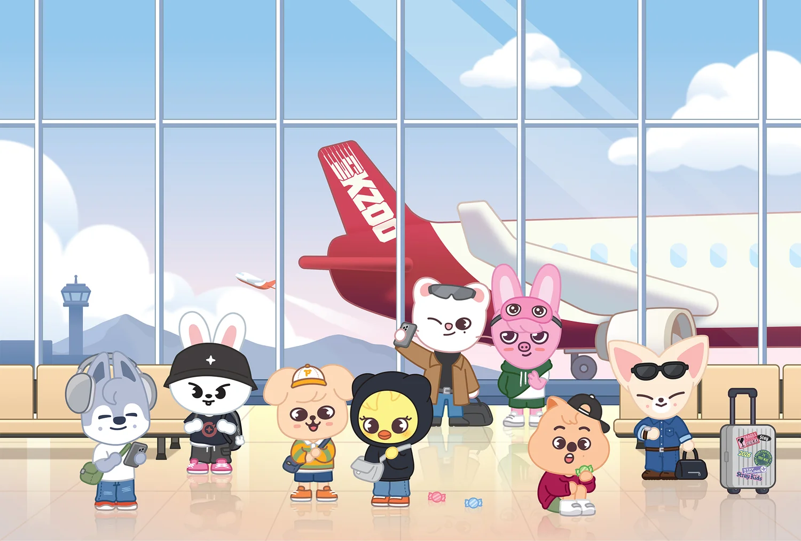

About

Stray Kids officially debuted in March 2018 with their mini album I am NOT. From the beginning, the group has centered its identity around expressing their own experiences, ideas, and emotions through music.
3RACHA — Bang Chan, Changbin, and HAN — plays a significant role in writing and producing the group's music, accounting for most of their discography. Because of their heavy involvement, they have created a distinctive sound and trademarks that set them apart in the industry.
What Makes Them Unique?
- 3RACHA has produced more than 200 songs, including writing and producing work for other groups.
- Their music has reached a wide international audience, including Japanese releases and a connection to Disney and Marvel through Deadpool & Wolverine.
- Their performances are known for complex and demanding choreography.
- Their lyrics frequently explore identity, growth, self-expression, personal development, and introspection.